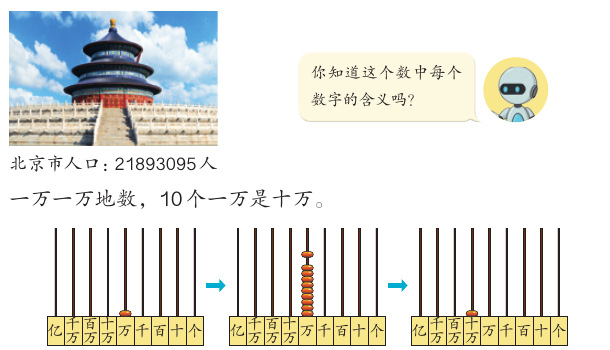
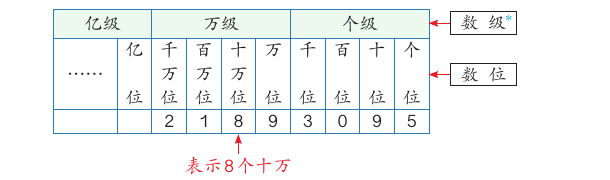

亿以内数的认识
北京有 21893095 人。这个数你会读吗？每个数字表示多少？这一课，我们从计数器开始，学会读、写一亿以内的大数。
学完本课，你能够：
01生活中的大数
先说结论：在生活和生产中，我们常常用到比万大的数。教材用 2020 年第七次全国人口普查的数据开头。
| 地区 | 人口 / 人 | 地区 | 人口 / 人 |
|---|---|---|---|
| 北京 | 21893095 | 广东 | 126012510 |
| 山东 | 101527453 | 河南 | 99365519 |
| 江苏 | 84748016 | 四川 | 83674866 |
这些数都比一万大得多。要读懂它们，我们先要知道：比万大的计数单位有哪些。
02计数单位：一万一万地数
先说结论：10 个一万是十万，10 个十万是一百万。每相邻两个计数单位之间的进率都是 10。

教材让我们在计数器上接着数下去：
- 一万一万地数，10 个一万是十万。
- 10 个十万是一百万。
- 10 个一百万是一千万。
- 10 个一千万是一亿。
个（一）、十、百、千、万、十万、百万、千万、亿都是计数单位。教材第 2 页
下面用计数器动手数一数。你会看到：一个数位上的珠子满了十颗，就换成左边一位上的一颗珠子。
这是教材计数器的模拟。为了看清楚，满十颗时直接换成左边一位的一颗；真的计数器要你自己拨。
03数位、数级和数位顺序表
先说结论：计数单位排成一排，它们所占的位置叫作数位。从右边起，每四个数位是一级。
在用数字表示数的时候，这些计数单位要按照一定的顺序排列起来，它们所占的位置叫作数位。教材第 2 页

个位、十位、百位、千位。表示多少个一。
万位、十万位、百万位、千万位。表示多少个万。
从亿位开始。亿级的其他数位，下一课再学。
21893095 每一位上的数字表示多少？从左往右看：
| 数字 | 2 | 1 | 8 | 9 | 3 | 0 | 9 | 5 |
|---|---|---|---|---|---|---|---|---|
| 数位 | 千万位 | 百万位 | 十万位 | 万位 | 千位 | 百位 | 十位 | 个位 |
| 表示 | 2 个千万 | 1 个百万 | 8 个十万 | 9 个万 | 3 个千 | 0 个百 | 9 个十 | 5 个一 |
自然数
有了数位，用 0～9 这十个数字就能表示更多、更大的数。
表示物体个数的 1，2，3，4，5，6，7，8，9，10，11，…都是自然数。一个物体也没有，用 0 表示，0 也是自然数。所有的自然数都是整数。教材第 3 页
最小的自然数是 0。没有最大的自然数，自然数的个数是无限的。
04读数：先分级，再读
先说结论：读大数时先分级。万级按个级的读法读，后面加一个“万”字。读数时要特别注意 0。
教材先比较了 24960000 的两种读法。一种是“二千万四百万九十万六万”，另一种是“二千四百九十六万”。第二种更简便。万级的 2496 和个级的 2496 读法一样，只是后面多一个“万”字。
- 先读万级，再读个级。
- 万级的数，要按照个级的数的读法来读，再在后面加上一个“万”字。
- 每级末尾不管有几个 0，都不读，其他数位上有一个 0 或连续几个 0，都只读一个零。
读法按教材第 4 页和第 11 页的规则由程序生成。
05写数：没有的数位写 0
先说结论：写数也要先分级。先写万级，再写个级。哪个数位上一个也没有，就在那个数位上写 0。
教材的例子是北京大钟寺的永乐大钟。钟内外共铸了二十三万零一百八十四个字。先看这个数有几级：有“万”字，所以有两级。万级是二十三，写 23；个级是零一百八十四，千位上一个也没有，写 0。所以写作 230184。
- 先写万级，再写个级。
- 哪个数位上一个也没有，就在那个数位上写 0。
| 读法 | 万级 | 个级 | 写作 |
|---|---|---|---|
| 二十三万零一百八十四 | 23 | 0184 | 230184 |
| 十万二千三百四十五 | 10 | 2345 | 102345 |
| 三百零二万六千 | 302 | 6000 | 3026000 |
题目来自教材第 6–8 页的“做一做”和练习一。
06数的组成
先说结论：一个两级的数，可以看成“几个万”和“几个一”合起来。也可以拆成每个数位上的数相加。
表示 4 个万，7578 个一。28 0064 表示 28 个万，64 个一。
这个数由四十万和四万组成。
反过来，知道组成也能写出这个数。练习一第 5 题：由四百万、八十万、五万和三千组成的数是 4853000。4000000 + 600000 + 70000 + 8000 + 2 = 4678002。
1 亿有多大
教材第 7 页的“你知道吗”给了两个感受 1 亿的例子：
- 据统计，2024 年我国约有 1 亿名在校小学生，他们大约可以坐满 1250 个国家体育场。
- 每秒画 1 个点，一刻不停地画。画 1 亿个点，要画 3 年 2 个多月。
07自测与速记
速记表
| 要点 | 一句话 |
|---|---|
| 计数单位 | 个、十、百、千、万、十万、百万、千万、亿；相邻进率是 10 |
| 数位与数级 | 从右边起，每四个数位是一级：个级、万级、亿级 |
| 读数 | 先分级；万级按个级读，加“万”；级末尾的 0 不读，中间的 0 只读一个零 |
| 写数 | 先分级，先写万级再写个级；没有的数位写 0 |
| 数的组成 | 4 7578 = 4 个万 + 7578 个一；440000 = 400000 + 40000 |
| 自然数 | 0，1，2，3，… 都是自然数；最小是 0，没有最大的 |
相关课程
教材：人教版《数学》四年级上册（2022 课标修订版）第一单元“万以上数的认识”第 1–9 页。标为“补充”的内容和模拟演示是课程作者的解释，不是教材原文。